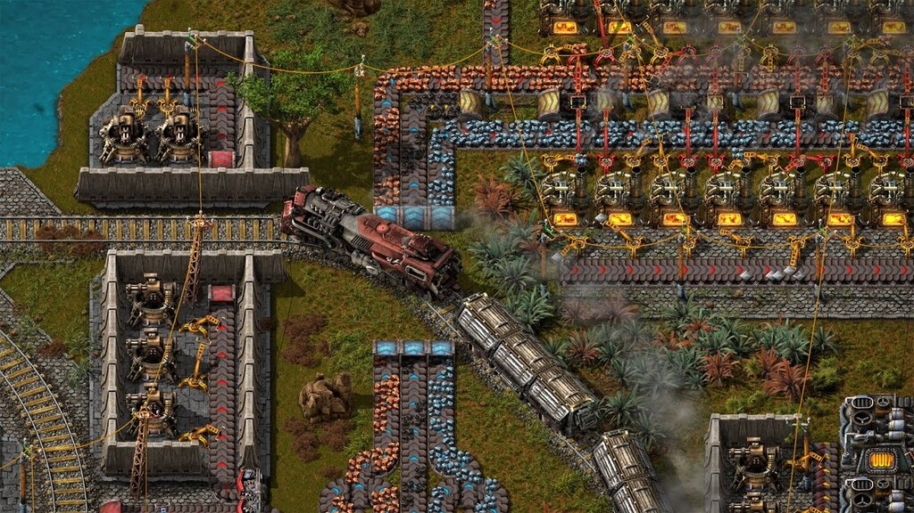
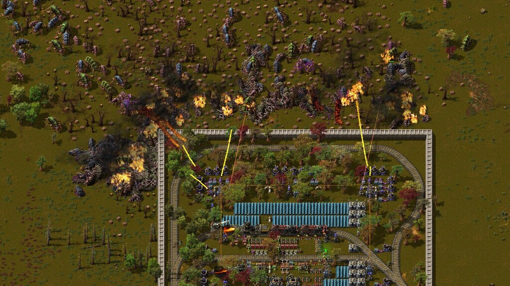
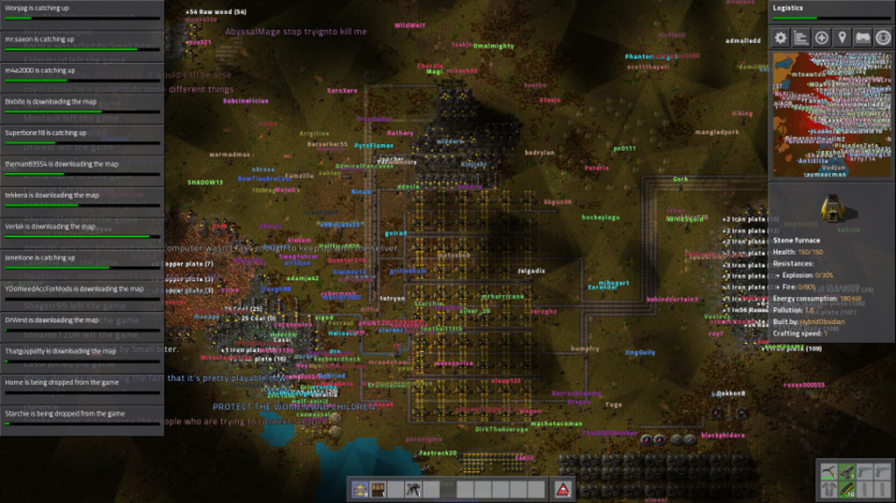
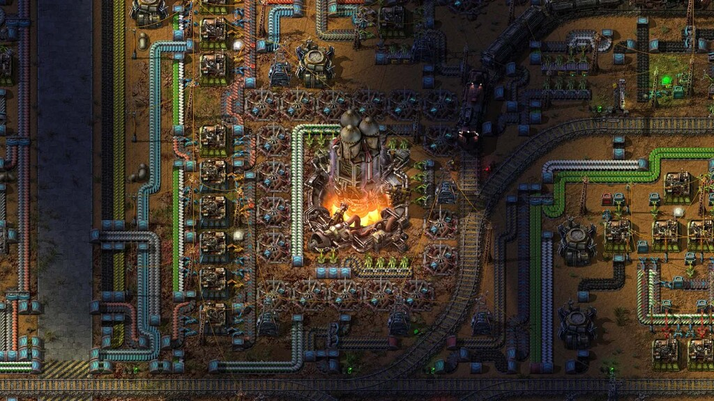

¿Qué es Factorio?
Factorio es un juego de simulación y construcción desarrollado por Wube Software. En Factorio, te conviertes en un ingeniero varado en un planeta alienígena y tu objetivo principal es construir y administrar una compleja cadena de producción automatizada para sobrevivir y eventualmente escapar de ese planeta. La mecánica central de Factorio gira en torno a la creación de líneas de producción eficientes. Debes extraer minerales, transportarlos a fábricas donde se procesarán en productos útiles, y luego distribuir esos productos a lo largo de tu base para su almacenamiento o uso en otros procesos. A medida que avanzas, puedes investigar y desarrollar nuevas tecnologías que desbloquean máquinas más avanzadas y permiten la automatización de tareas cada vez más complejas.
Factorio también incluye elementos de defensa, ya que el planeta está lleno de criaturas hostiles que intentarán atacar tus instalaciones. Deberás construir defensas y armas para proteger tu base de los ataques enemigos.
Una de las características más notables de Factorio es su enfoque en la optimización y el diseño eficiente. El juego te desafía a mejorar constantemente tu cadena de producción, optimizando el flujo de recursos y maximizando la eficiencia de tus fábricas. Además de la experiencia de un solo jugador, Factorio también ofrece la posibilidad de jugar en modo multijugador, donde puedes colaborar con otros jugadores para construir bases enormes y enfrentar desafíos más grandes.
En resumen, Factorio es un juego de construcción y simulación en el que debes construir y administrar una cadena de producción automatizada para sobrevivir y escapar de un planeta alienígena. Con su enfoque en la optimización y la automatización, el juego ofrece una experiencia desafiante y altamente adictiva para los amantes de la planificación estratégica y la resolución de problemas.
Destacado de la galería
Ver másCompra Factorio
Factorio está disponible en Steam, GOG, y Humblebundle.
"Compra Factorio. Construye Factorio. Convierteté en Factorio."
-Rick Lane, PC Gamer
"Es mas facil comenzar la dieta el lunes que dejar este juego."
-JoakoGallardo, Steam
Requisitos del sistema
Mínimos:- SO: Windows Vista o superior, macOS, Linux, 64bits.
- Memoria: 4GB RAM
- Gráficas con capacidad de DirectX 10.1 y 512 MB de VRAM
- Procesador de dos núcleos, de 3GHz o más.
- 3GB de almacenamiento.
- Memoria: 8GB RAM
- Gráficas con capacidad de DirectX11 con 2GB VRAM o más
- Procesador de 4 núcleos, de 3GHz o más.
Guías y Tutoriales
Mira nuestra guía "Empezando a jugar" para que puedas empezar sin complicaciones ¡Entenderás lo básico del juego muy rápido!
Empezando a jugarTambién puedes consultar la sección de mecánicas y entidades para tener más información sobre aspectos particulares del juego.
Mecánicas y entidadesTambién puedes visitar está sección para ver guías y links útiles de la comunidad.
Guías de la comunidad